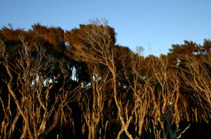
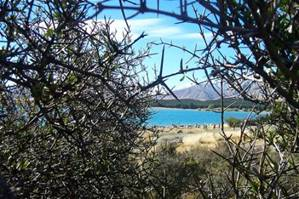

9th World Rogaining Championships 2010
Planners' Report
June 2010
The course at Cheviot is virtually ready to go. Planning is complete and all the checkpoints have been marked. The course has been inspected and approved by the vetters. All that now remains is to put out the flags and the NavLight electronic punches close to the event.
General
The course is set in 220 square kilometers of mostly open private farmland, usually well grazed and providing fast travel on foot. The course is bounded by two major rivers: the Waiau to the north, and the Hurunui to the south. The eastern boundary is the Pacific Ocean. There are many spectacular views, particularly on the eastern, coastal side of the course.
Because of the fast nature of the country, we have decided to increase the challenge by using a large number of checkpoints to boost both the distance travelled and the climb required by any team attempting to complete the entire course. To this end, we have chosen, visited and marked 93 checkpoint sites. The optimum route to visit them all is at least 140 kilometers in length. Although the underfoot conditions are generally fast, there are some interesting little gullies and streams, and some small areas of native bush, which contain strategic checkpoints chosen for their interest and challenge. Virtually the entire map is navigable except for a few small plantations and bush filled gullies and a few out-of-bounds areas.
Event Centre
The event centre is the Cheviot Area School, located in the Cheviot township. This is slightly east and north of the centre of the map, providing course access in most directions. There is a large grassed area for camping. Cheviot itself has a small supermarket, some accommodation (motels and camping) and a petrol station. Because the school is in use, we are allowed access only from about 5 p.m. on Friday until 9:00 p.m. on Sunday evening, meaning that overnight camping on the Sunday night is not allowed.
Relief
Altitude ranges from sea level to 440 metres above MSL. Cheviot township is at 60 metres elevation. About 2/3rds of the course is on gentle, rolling hills involving short climbs occasionally of over 100 metres elevation. For visitors without hills to train on, regular running should provide enough fitness to cope with this country. The eastern hills have a few steep places, where care may be required while descending, especially if wet.
Vegetation
The few pockets of native bush are generally passable but may be slow. There are some areas of “scrub”, often adjacent to the native bush, consisting of manuka (small, dense trees). These are marked as a different colour on the map and are generally best avoided, although there may be a few sheep tracks through them.
Matagouri may be encountered on the sides of some steeper gullies and ridges. This is a usually small, (1 metre high), woody, open plant, with sharp 3 cm long spikes growing from all parts of it. The spikes scratch your legs, but seldom penetrate your skin unless you show blatant disregard for it. We usually find that long gaiters are enough protection, even if you wear shorts. If you cannot find a way through it, there is always a way around it. Some patches of other scrub plants, e.g. manuka, can be too dense to easily move through and are also best to move around (see examples below).
 Manuka |  Matagouri |
Exposure and Clothing
Because of the open nature of the course, there is little protection from bad weather. Wind is a dominant feature of the NZ climate, especially when compared to large continental climates. Wind gusts of 100 km/hr are not uncommon in exposed places. These winds can be anything from hot and very dry, to cold and very wet. You should bring with you a good, heavy, weatherproof parka, and several layers of thermal clothing such as polypropylene and fibre pile fleece. In extreme conditions, thick wool is still the best. It is unlikely that you will need to carry this with you but have it available at the event centre in case. The most suitable fine-weather clothing you should carry is two or three polypropylene layers for the upper body, a windproof parka with a hood, a thermal hat and gloves, and light over-trousers or thermal pants.
Landowners and Fences
We are on private farmland and we have over 80 landowners! Apart from the need to show the utmost respect for their property and animals, this means that there are a lot of fences to cross. Many fences are electric. While not life threatening to animals or humans, they deliver very painful electric pulses if skin contact is made. There are many designs in common use and some have “outriggers” – wires strung separately 200 to 300 mm out from the fence itself. Examples of electric fences will be featured on the model course, and displayed in the administration area before the Rogaine. A good technique is required to cross electric fences and those who are not practised at the art should try to cross at gateways where possible. As a general rule, you take your pack off, drop it over the fence, and crawl through or under the wires. Some electric fences can be handled by using a strong plastic bag to hold the wire down while you cross.
If you open a gate, YOU must close it. Do NOT leave it for someone else to close! Animals in the wrong place can cost farmers many thousands of dollars. If the gate does not open easily, climb over it at the end where the hinges are, not at the opening end.
Checkpoints
These will be marked with flags rather like the traditional orienteering flags. Because of the frequent occurrence of strong wind, we cannot just “hang” flags; they tend to be torn to shreds or disappear entirely. Instead, we try to fix them around bushes (often prickly matagouri) to anchor them. This distorts their shape a bit and they sometimes look smaller so keep your eyes open, especially in areas of bush or trees. Examples of flags can be seen at the model course during the week before WRC2010.
There will be either a single or two electronic punches at each checkpoint. If there are two punches, you can use either one. Try not to use both: it will clutter up your printed record at the end, but is of no other consequence.
Out-of-bounds areas and special checkpoints
There are some out-of-bounds areas, which will be marked on the map. In particular, some of these areas are individual paddocks on a farm where we otherwise have full access. These paddocks will have fawning deer or lambing sheep in them and it is vital that you do not enter. If in doubt about where you are, take a different, wide alternative route.
The course is bisected by State Highway 1, a major thoroughfare carrying traffic between Christchurch in the south and Blenheim in the north, but which nevertheless has only a single lane in each direction. Because of the volume of fast moving traffic on this road, crossings of the road are strictly controlled. Competitors ARE NOT PERMITTED TO WALK ALONG THIS ROAD AND THEY MUST CROSS IT ONLY AT DESIGNATED PLACES. Competitors may only pass from one side of the highway to the other via six marked crossing points, or within the confines of Cheviot township (near the hash-house). Each of the six marked crossing points has a checkpoint, numbered R1 to R6, which must be punched every time you cross the road. In most cases the crossing is via a culvert or other passage under the roadway. The first punching of a particular R checkpoint will score the team 15 points; subsequent visits do not score any points, but provide evidence that the team has used the mandatory crossing method. All but one of the road crossings are associated with a waterstop. Failure to comply with the rules of crossing State Highway 1 will lead to the disqualification of a team.
Other smaller roads may be crossed with care at any safe location. Competitors are discouraged from walking along the formed road surface; there is usually an easy route on the grassed verge or parallel to the road on farmland.
A major railway track bisects the course in the north-south direction, west of State Highway 1. Competitors MUST NOT walk along the rail corridor comprising the track and the fenced enclosure bordering it. Competitors may only cross from one side of the track to the other at two types of crossings: (1) Legal road crossings or formed farm tracks and where there is a clear view of the track in both directions; or (2) bridges or culverts under which a crossing can safely be made, and one stock overpass, each of which is marked on the map. Failure to comply with the rules of crossing the railway track will lead to the disqualification of a team.
The Map
The map has been prepared in OCAD and is based on an available topographic data base augmented by on-site fieldwork. The map scale is 1:40,000 (25 mm / km) with 20 m contours (100 m index contours are drawn bolder). The orientation is magnetic north along the major axis and magnetic north lines are overprinted at 1 km spacing. The map is approximately A2 sized (420 mm × 594 mm).
As is usual on private farmland, fences, farm tracks and vegetation blocks are being altered all the time. Some may exist which are not on the map, and others which are on the map may have gone. Generally, fences and tracks marked on the map are reliable, especially in the vicinity of checkpoints, but you should always look for other clues that support your current location. Contours are always reliable.
Water Drops
There are eight water drops. All but three are close to the special checkpoints at main road crossings. If we have a hot day, with north-west winds (very dry), you will need to carry up to 3 litres of water with you, and plan to visit water drops frequently.
There is little clean natural water available on the course, although some streams on the eastern hills may provide a sip if there has been recent rain. In spite of this, as is typical on NZ courses, you can expect to get wet feet at some stage, but you may have long intervals between immersion.
Terminology
The following terms are used in the checkpoint descriptions and may not be familiar to all competitors. Efforts will be made to use all of these terms for checkpoints on the model course.
| Description | Explanation |
| cabbage tree | A New Zealand native tree (cordyline australis), so-called because its appearance from a distance looks like a round green “cabbage” on top of a slender ribbed trunk. |
| copse | A group of trees occupying a relatively small area; same as “grove” |
| grove | A group of trees occupying a relatively small area; same as “copse” |
| plantation | A man-made forest, usually of a single type of pine or gum trees |
| poplar tree | An exotic tree used extensively for shelter and erosion control; usually tall and columnar in shape (Lombardy poplar). |
| shelterbelt | A single or double line of trees, often along a fenceline, providing protection for animals or crops. |
| vegetation | A general term for a block of native or mixed forest |
| watercourse | A general term for a distinctive path formed by water flow, but which may be dry during periods of relatively dry weather. |
Pete Squires and Phil Bones
June 2010